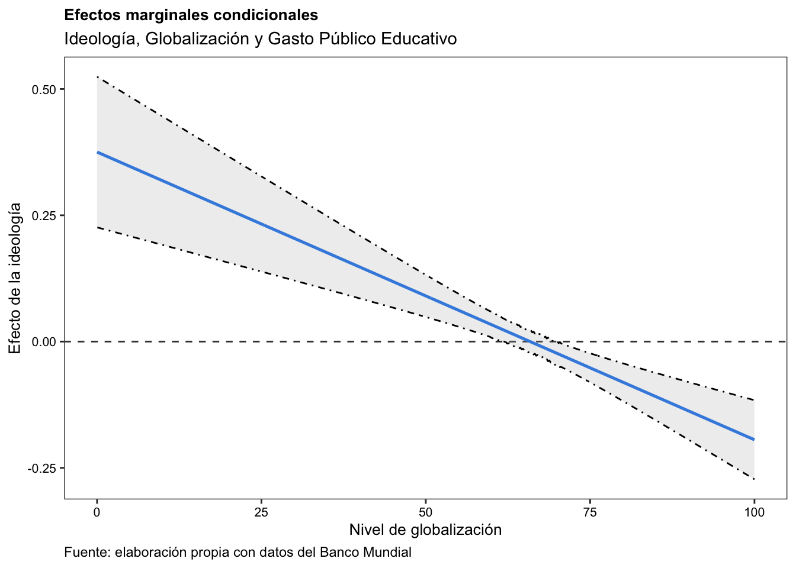

h1_tw2 <- plm(exp_w1 ~ VP_mean + KOFGIdj + VP_mean * KOFGIdj +
pop_w2 + pop_w1_ln + eco_w4 + eco_w6 + eco_w16,
data = h1,
model = "within",
effect = "twoways")Antes de que todo lo tuviéramos en nuestros celulares, las fotos las imprimíamos, y las colocábamos en álbumes. ¿Alguna vez viste alguno? Muchas veces, estos libros contaban con páginas y páginas de fotos familiares, donde generalmente aparecían las mismas personas en un mismo lugar: la casa de los abuelos, o el jardín donde la familia jugaba..
Imagina que estás viendo un álbum de fotos, donde el fondo de cada una de estas es siempre el mismo, pero las personas cambian: crecen, se mudan, cambian de peinado, o incluso de estilo. ¿Cómo podrías analizar estos cambios en tu familia, sin distraerte con el fondo o la decoración propia de la casa donde se tomó la foto? Una forma sería ignorar estos elementos fijos, enfocándote únicamente en las diferencias de un año a otro.
Pues bien, ¡eso es más o menos lo que hacen los modelos de efectos fijos! En lugar de intentar captar todo, estos modelos “ignoran” las cosas que no cambian con el tiempo (como el fondo en las fotos) y se centran en los cambios dentro de cada grupo o unidad (las personas en las fotos). Esto los convierte en una herramienta fantástica para responder preguntas como: ¿Qué pasa cuando una política cambia en un país? o ¿Cómo afecta un cambio de estrategia en una empresa a sus resultados?
En esta publicación, no me interesa demasiado explicar la lógica detrás de un modelo de efectos fijos, o los tipos de estos. Joshua D. Angrist & Jörn-Steffen Pischke, por ejemplo, brindan una excelente explicación al respecto en su libro Mostly Harmless Econometrics; mientras que Arne Henningsen & Géraldine Henningsen, en su capítulo Analysis of Panel Data Using R, ofrecen una explicación detallada de este tipo de modelación a través de R.
En cambio, aquí explicaré un ejemplo que, personalmente, me causó demasiados problemas en mi tesis doctoral: la visualización de efectos marginales condicionales promedio, derivado de estmaciones de modelos de efectos fijos de dos vías.
El caso…
En mi tesis doctoral construí diferentes modelos de efectos fijos de dos vías con el objetivo de entender las razones por las cuales, en Latinoamérica, los países de la región expandieron los niveles de financiamiento público educativo a partir de la década de los 90; y priorizaron sistemáticamente el gasto entre niveles parte de los subsistemas de enseñanza básica, respecto a la educación superior, o profesional.
Evidentemente, el caso es mucho más amplio, y en este post no quisiera adentrar sobre el por qué de cada covariante incluida en los modelos. Sin embargo, es preciso mencionar por qué un modelo de efectos fijos.
Two-way Fixed Effects Models
Uno usa modelos de efectos fijos de dos vías cuando lo que intentas es controlar la heterogeneidad no observada que es constante en el tiempo para cada unidad transversal (en español: países, individuos, o incluso empresas), y simultáneamente por factores inobservables que son constantes a través de las unidades en un periodo específico (otra vez, en español: el tiempo).
¿Pero cuándo es útil este análisis de datos tipo panel?
- Cuando existen efectos específicos de las unidades: cuando quieran capturar características inherentes a las unidades (como diferencias culturales, políticas, o estructurales entre países) que no varían en el tiempo.
- Cuando existen efectos específicos del tiempo: es decir, cuando quieran modelar influencias comunes a todas las unidades en un momento dado, como shocks macroeconómicos globales, o eventos específicos de un periodo.
- Cuando la variación dentro de las unidades y a través del tiempo es clave: es decir, cuando el interés recaiga en identificar relaciones causales utilizando la variación interna de las unidades, descontando los efectos constantes de las unidades y del tiempo.
La base de datos
La base de datos que emplearemos en este ejemplo es de elaboración propia, y pueden encontrarla en mi Github. En términos generales, este marco de datos es de tipo panel, y cuenta con mucha información sobre educación, economía, contexto político y social de \(18\) países latinoamericanos, entre \(1970\) y \(2018\). Sobre fuentes de información y demás, una vez más, los invito a que revisen el repositorio, pues ahí tienen todo lo necesario… Sin embargo, quedémonos con esta puntualización para el ejemplo que elaboraremos en este post:
- Variable dependiente: gasto público educativo de cada gobierno latinoamericano incluido en la muestra, entre 1970 y 2018, como proporción del PIB.
- Variables independientes:
- Ideología gubernamental: variable continua con puntajes de ideología gubernamental, entre una escala restringida entre \(1\) y \(20\), donde los extremos representan posiciones ideológicas extremas (izquierda y derecha, respectivamente).
- Globalizacón: nivel de globalización del país para el año observado. Promedio entre \(0\) y \(100\), donde los extremos representan el nivel de apertura a los mercados internacionales de bienes y servicios (sin globalización y completamente globalizado, respectivamente).
- Variables de control: conjunto de variables de control que definen características sociales y económicas de los gobiernos latinoamericanos para el periodo observado.
Estimación
La estimación de un modelo de efectos fijos de dos vías en R, generalmente sigue la función plm(), de la paquetería plm. El modelo busca evaluar cómo varias variables explicativas impactan en la variable dependiente exp_w1, controlando por heterogeneidad no observada específica de las unidades (en este caso, países) y de los periodos (aquí: años).
Desglosemos lo anterior:
- La función
plm()estima modelos para datos tipo panel:
- La fórmula
exp_w1 ~ ...nos dice que:exp_w1es la variable dependiente,VP_meanyKOFGIdjson las variables explicativas principales.VP_mean * KOFGIdjes el término de interacción para analizar si el efecto de la polarización política depende del nivel de globalización.pop_w2,pop_w1_ln,eco_w4,eco_w6,eco_w16son las variables de control relacionadas a población y economía de los países.
data = h1es la base de datos que contiene las variables.model = "within"especifica un modelo de efectos fijos, que elimina la heterogeneidad no observada constante para cada unidad y cada periodo.effect = "twoways"indica un modelo de efectos fijos de dos vías, controlando por efectos específicos de las unidades y periodos.
Ahora podemos ver los resultados:
summary(h1_tw2)Twoways effects Within Model
Call:
plm(formula = exp_w1 ~ VP_mean + KOFGIdj + VP_mean * KOFGIdj +
pop_w2 + pop_w1_ln + eco_w4 + eco_w6 + eco_w16, data = h1,
effect = "twoways", model = "within")
Unbalanced Panel: n = 17, T = 10-27, N = 342
Residuals:
Min. 1st Qu. Median 3rd Qu. Max.
-2.311338 -0.333117 0.037205 0.369118 2.590839
Coefficients:
Estimate Std. Error t-value Pr(>|t|)
VP_mean 0.37518739 0.09064829 4.1389 4.639e-05 ***
KOFGIdj 0.11489022 0.02568127 4.4737 1.125e-05 ***
pop_w2 0.11828132 0.05723363 2.0666 0.03970 *
pop_w1_ln 0.07380443 1.10280716 0.0669 0.94669
eco_w4 -0.00013629 0.00005570 -2.4468 0.01504 *
eco_w6 -0.03721986 0.01604994 -2.3190 0.02113 *
eco_w16 0.02632195 0.02207769 1.1922 0.23419
VP_mean:KOFGIdj -0.00569599 0.00135620 -4.2000 3.606e-05 ***
---
Signif. codes: 0 '***' 0.001 '**' 0.01 '*' 0.05 '.' 0.1 ' ' 1
Total Sum of Squares: 137.91
Residual Sum of Squares: 123.21
R-Squared: 0.10659
Adj. R-Squared: -0.10381
F-statistic: 4.1163 on 8 and 276 DF, p-value: 0.00011713Antes de seguir, interpretemos rápidamente lo encontrado:
VP_mean(polarización ideológica): Un aumento en la polarización incrementa significativamente el gasto educativo (coeficiente \(= 0.375, p < 0.001\)).KOFGIdj(globalización): La globalización también tiene un efecto positivo y significativo sobre el gasto educativo (coeficiente \(= 0.115, p < 0.001\)).- Interacción
VP_mean:KOFGIdj: El coeficiente de \(-0.0057 (p < 0.001)\) indica que el efecto positivo de la polarización disminuye a medida que aumenta el grado de globalización. - El R-cuadrado (\(0.107\)) indica que el modelo explica aproximadamente el \(10.7\%\) de la variación en el gasto educativo. Este nivel de ajuste es común en modelos de datos panel con efectos fijos, donde gran parte de la variación ya está controlada por efectos no observados.
- Por tanto, la polarización ideológica y la globalización tienen efectos significativos sobre el gasto educativo público. Sin embargo, la interacción negativa entre ambas variables sugiere que la globalización modera el impacto de la polarización, disminuyendo su efecto positivo a medida que los niveles de globalización aumentan.
Con el objetivo de garantizar que los errores estándar reportados sean robustos a la heterocedasticidad, a continuación, se calculan estos a través de la función coeftest(). Este paso es fundamental en el análisis de datos tipo panel, donde la varianza de los errores puede no ser constante entre observaciones, lo que podría sesgar las inferencias estadísticas si no se corrige.
coeftest(h1_tw2, vcov = vcovHC(h1_tw2, type = "HC1"))
t test of coefficients:
Estimate Std. Error t value Pr(>|t|)
VP_mean 0.37518739 0.17180062 2.1839 0.02981 *
KOFGIdj 0.11489022 0.04793220 2.3969 0.01720 *
pop_w2 0.11828132 0.11752730 1.0064 0.31510
pop_w1_ln 0.07380443 3.17545949 0.0232 0.98147
eco_w4 -0.00013629 0.00013802 -0.9874 0.32430
eco_w6 -0.03721986 0.02317632 -1.6059 0.10943
eco_w16 0.02632195 0.04029425 0.6532 0.51414
VP_mean:KOFGIdj -0.00569599 0.00272008 -2.0940 0.03717 *
---
Signif. codes: 0 '***' 0.001 '**' 0.01 '*' 0.05 '.' 0.1 ' ' 1¿Y ahora? Grafiquemos resultados
¡Ya… casi! Ahora vamos con el propósito de este post: el análisis de efectos marginales condicionales para ilustrar la forma en que el efecto de la ideología VP_mean, varía sobre el gasto educativo exp_w1, según el nivel de globalización KOFGIdj. A continuación, desglosaré qué es este tipo de análisis visual, y cómo se construye en R a través del ejemplo en cuestión.
Efectos marginales condicionales
En ciencias sociales, y fundamentalmente, en ciencia política, la mayoría de argumentos teóricos postulan que el efecto de ciertas variables varía dependiendo del contexto social, político, económico, o estratégico… Por tanto, encontrar modelos econométricos como el de este ejemplo, donde se postula una interacción entre variables, es algo muy usual en la vida real. Pero, ¿qué quiero decir con esto?
El ejemplo de este post aborda una hipótesis condicional que sigue una estructura estándar en la literatura sobre efectos marginales condicionales. Específicamente, se plantea que la posición ideológica gubernamental (\(X\)) tiene un efecto positivo sobre el gasto público educativo (\(Y\)), cuyo impacto se ve amplificado a medida que la globalización (\(Z\)) aumenta. Formalmente, la hipótesis puede expresarse como una interacción entre \(X\) y \(Z\), donde el efecto de \(X\) sobre \(Y\) depende del valor de \(Z\):
\[\begin{equation} Y_{it} = \beta_0 + \beta_1 X_{it} + \beta_2 Z_t + \beta_3 (X_{it} \times Z_{it}) + \alpha_i + \lambda_t + \epsilon_{it} \end{equation}\]
Donde:
- \(Y_{it}\): Gasto público educativo de país \(i\) en el tiempo \(t\).
- \(X_{it}\): Posición ideológica del gobierno del país \(i\) en el tiempo \(t\).
- \(Z_{it}\): Nivel de globalización en el tiempo \(t\).
- \(X_{it} \times Z_{it}\): Término de interacción entre la ideología del gobierno y la globalización.
- \(\alpha_i\): Efectos fijos por unidad (por ejemplo, país).
- \(\lambda_t\): Efectos fijos por tiempo (por ejemplo, año).
- \(\epsilon_{it}\): Error aleatorio.
Pero, ¿qué es el efecto marginal condicional? Este concepto refiere a la variación en la expectativa de la variable dependiente ante un cambio en una variable independiente, condicionado a un valor específico de otra variable, que puede estar involucrada en una interacción, o estar controlada por otros factores. El concepto, por tanto, permite entender cómo cambia la relación entre las variables frente a diferentes contextos, proporcionando una interpretación más precisa sobre las dinámicas subyacentes del modelo. ¿Y cómo lo obtenemos?
Para el modelo en cuestión, el efecto marginal de \(X_{it}\), está dado por
\[\begin{equation} \frac{\partial Y_{it}}{\partial X_{it}} = \beta_1 X_{it} + \beta_3 Z. \end{equation}\]
Por tanto, a menos que el coeficiente asociado al producto (\(\beta_{3}\)) sea igual a \(0\), el efecto marginal de \(X_{it}\) es condicional al valor de \(Z_{it}\).
En resumen: la interacción entre las variables de ideología gubernamental y globalización implica que el efecto de la posición ideológica gubernamental sobre el gasto público educativo no es constante, sino que depende del punto de apertura comercial a los mercados internacionales de bienes y servicios en el que se encuentre cada gobierno en un periodo específico. En otras palabras, el impacto de la ideología sobre el gasto se intensifica o atenúa según el contexto global en el que se encuentre el país.
Este tipo de interacción es crucial para obtener una comprensión más completa de las relaciones entre variables en contextos dinámicos. Así, el efecto marginal condicional nos permitirá observar cómo cambia el impacto de una variable en función de otra, proporcionando una perspectiva más detallada sobre cómo las variables actúan conjuntamente dentro de un marco empírico como el que estamos analizando en este ejemplo.
Gráficos de efectos marginales condicionales
Antes de iniciar a construir el ggplot del gráfico de efectos marginales condicionales, lo primero que haremos es generar un vector de valores numéricos entre \(0\) y \(100\), con el objetivo de forzar el cálculo de los efectos marginales condicionales sobre todo el rango posible de valores que puede tener la variable condicionand (\(Z\)).
koffgi_values <- seq(from = 0, to = 100, by = 0.20)Con base en esto, ahora calcularemos los efectos marginales condicionales promedio para los valores específicos de \(Z\). Para ello, utilizaremos la función avg_slopes() de la paquetería marginaleffects:
library(marginaleffects)
c_me_unobserved_avg <- marginaleffects::avg_slopes(
model = h1_tw2,
newdata = datagrid(KOFGIdj = koffgi_values),
variables = "VP_mean",
by = "KOFGIdj",
conf_level = 0.90
)¿Qué hicimos?
model = h1_tw2es el modelo previamente ajustado con la funciónplm(), en el que se estimaron los efectos fijos de dos vías para el gasto público educativo, la ideología y la globalización.newdata = datagrid(KOFGIdj = koffgi_values): Esta línea define un conjunto de datos simulado con diferentes valores de la variableKOFGIdj(nivel de globalización). Este nuevo conjunto de datos se utiliza para evaluar cómo cambia el efecto deVP_mean(ideología gubernamental) en función de los valores deKOFGIdj.variables = "VP_mean": Especifica que los efectos marginales deben calcularse para la variableVP_mean, que es la posición ideológica del gobierno.by = "KOFGIdj": Indica que los efectos marginales deVP_meandeben calcularse para cada nivel deKOFGIdj(globalización), es decir, el cálculo se realiza de forma condicionada a los valores de esta variable.conf_level = 0.90: Establece el nivel de confianza para los intervalos de confianza calculados, en este caso, un intervalo de confianza del \(90\%\).
Ahora sí, veamos nuestro gráfico de efectos marginales condicionales promedio:
c_me_unobserved_avg %>%
ggplot(aes(x = KOFGIdj, y = estimate)) +
geom_hline(yintercept = 0.00,
linetype = "dashed",
colour = "grey25") +
geom_line(color = "dodgerblue2",
linewidth = 0.9) +
geom_ribbon(aes(ymin = conf.low, ymax = conf.high),
alpha = 0.2,
colour = "black",
linetype = "dotdash",
fill = "darkgrey",
linewidth = 0.5) +
ggtitle("Efectos marginales condicionales",
subtitle = "Ideología, Globalización y Gasto Público Educativo") +
labs(x = "Nivel de globalización",
y = "Efecto de la ideología",
caption = "Fuente: elaboración propia con datos del Banco Mundial") +
theme_apa(x.font.size = 10,
y.font.size = 10) +
theme(plot.title = element_text(size = 10),
axis.text.x = element_text(color = "black",
size = 8),
axis.text.y = element_text(color = "black",
size = 8),
plot.caption = element_text(hjust = 0))
Pero, ¿qué con esto? El gráfico nos dice mucho, pero vamos por partes.
En general, el gráfico devela una pendiente negativa debido al coeficiente \(\beta_{3}\) encontrado bajo la condición de interacción. De esto se deduce que:
- Cuando los países de la región se encuentran bajo condiciones económicas de completo cierre a los mercados internacionales de bienes y servicios, el efecto marginal de un movimiento ideológico gubernamental en una unidad hacia la derecha (más conservadores), se asociaría con un incremento significativo de \(0.38\) puntos porcentuales sobre el financiamiento público del sector.
Sin embargo, esto no es todo. ¿Qué más podemos inferir?
- Cuanto más globalizado se encuentra un país, la relación observada tendería a decrecer en magnitud. Es decir: una vez que los países se globalizan por encima del \(65.86\%\), la promoción de políticas con un impacto superior sobre el fenómeno resultaría en retracciones bajo gobiernos ideológicamente de derecha, y el gasto educativo público total, o agregado.
Si… ¿pero qué hay de la línea punteada horizontal en \(0\)?
El punto anterior nos da una pista. Hay un punto, específicamente en \(65.86\%\) de globalización, donde el efecto marginal de \(X_{it}\) (ideología) sobre \(Y_{it}\) (gasto educativo) es neutro… por eso la línea punteada horizontal en \(0\): pues es aquí donde el efecto, valga la redundancia, es nulo. ¿Y cómo se obtiene? Recordemos: el efecto marginal condicional (\(ME\)) de \(X_{it}\) sobre \(Y_{it}\) dado \(Z_{it}\) está dado por:
\[\begin{equation} ME(X_{it} \mid Z_{it}) = \frac{\partial Y_{it}}{\partial X_{it}} = \beta_1 X_{it} + \beta_3 Z. \end{equation}\]
Por tanto, el punto donde \(ME(X_{it} \mid Z_{it}) = 0\), se encuentra resolviendo la derivada parcial de \(X_{it}\) dado \(Z_{it}\), es decir:
\[\begin{equation} \beta_1 X_{it} + \beta_3 Z_{it} = 0 \end{equation}\]
Entonces, tenemos que para \(Z_{it}\)
\[\begin{align} Z_{it} &= -\frac{\beta_{1} X_{it}}{\beta_{3} Z_{it}},\\ -\frac{0.37518739}{-0.00569599} = 65.86 \end{align}\]